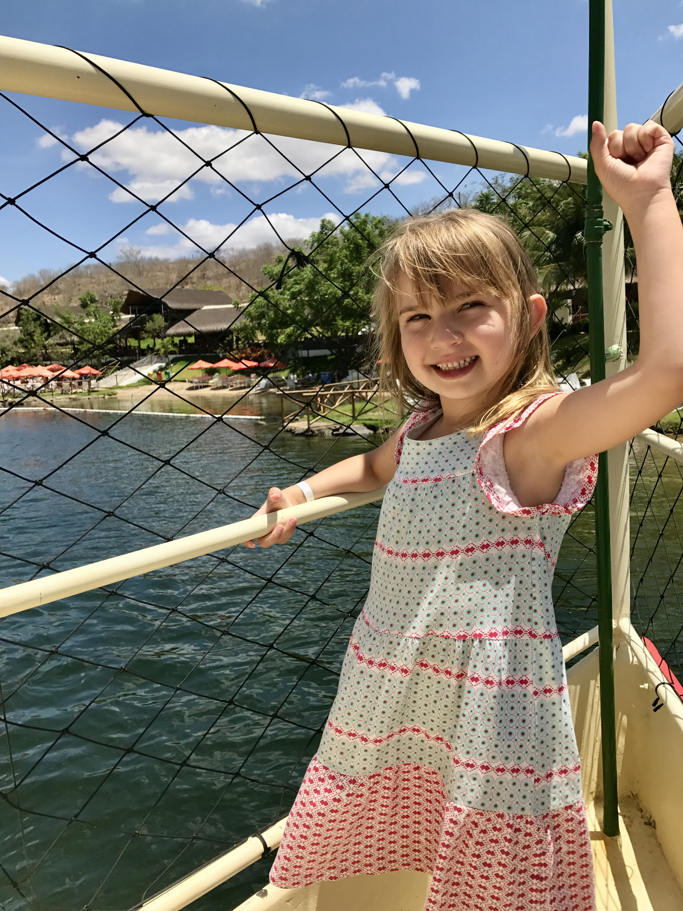

Preferências Musicais
Gêneros Favoritos
- Rock (Nacional e Internacional)
- Tango, Salsa e Estilo Gipsy Kings
- MPB e Pagode
- Pop Internacional dos anos 2000
Artistas que mais gosto
- Nacionais: Engenheiros do Hawaii, Skank, Marisa Monte, Tribalistas, Armandinho, Kid Abelha, Turma do Pagode, Menos É Mais.
- Internacionais: Andrea Bocielli, Arctic Monkeys, Nirvana, Guns n' Roses, Pink Floyd, Red Hot Chilli Pepers, Gipsy Kings, Adele, Queen, ABBA.
Preferências Esportivas
- Tênis de mesa
- Andar de bicicleta
Preferências Gastronômicas
Eu amo cozinhar, especialmente doces e sobremesas. Minhas comidas favoritas são:
- Churrasco
- Macarrão ao sugo
Não gosto de frutos do mar.
Hobbies e Vida Pessoal
Além de cozinhar, gosto muito de ler e assistir séries. Minhas favoritas são Friends e Gossip Girl.
Desde 2022, faço parte do Movimento Escoteiro. É uma experiência incrível onde aprendi valores valiosos e conheci pessoas maravilhosas. Um destaque especial vai para a minha chefe escoteira, Marcia.
No dia 14 de novembro de 2025, a família cresceu com a chegada da Ana Cecília, minha afilhada! ❤️
Minha Galeria


